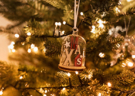

The World Wide Web (WWW), commonly known as the Web, is
an information system enabling documents and other Web
resources to be accessed over the Internet.
RECENT NEWS
X-mas
X-mas is a common
abbreviation of the word
Chrismas

Bell
a hollow metal object
shaped like a cup
Bear
a large, strong wild
mammal with a tick fur
coat that lives especially in
colder parts of Europe, Asia,
and North America
Socks
a piece of cloting made
form soft material that
covers your foot and the
lower part of your leg